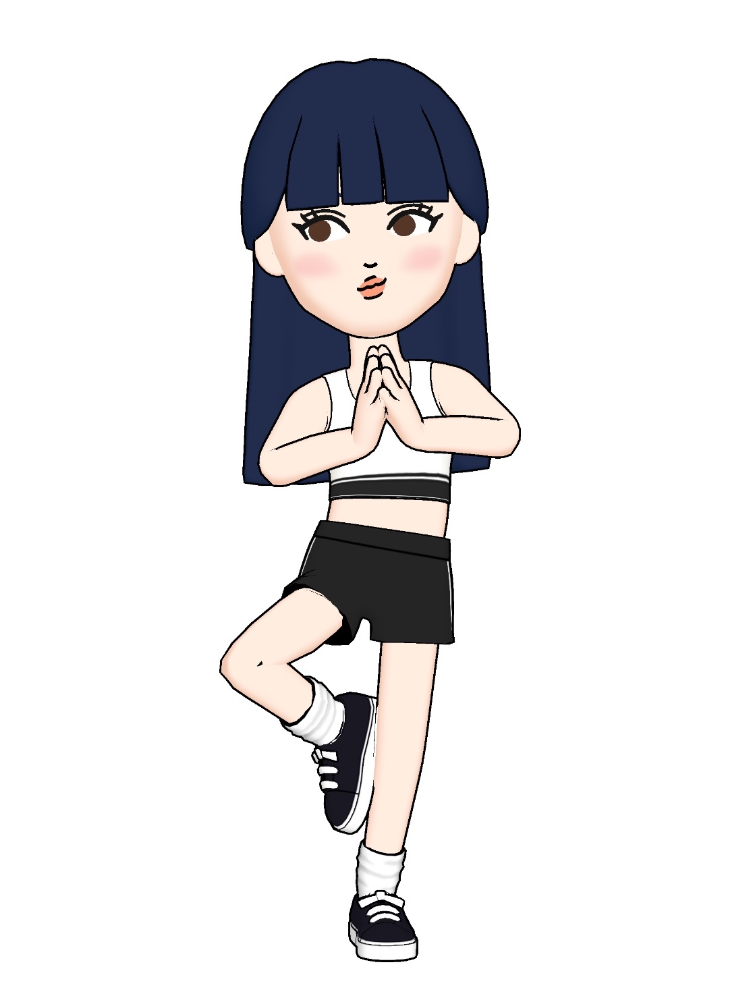

Hi there.
Based in Toronto, my background encompasses Business/Tech.
I'm passionate about Design and Data,
and how it can be utilized to enhance the lives of human beings.
I love learning new things.
You can view my latest work here
My Skills.
Analytical
I've always been fasincated with the real-life problems data could solve.
The answers are all around us, but it is up to how we derive them.
I believe that the answer to life is also hidden in the abundance of data around us.
Tools: PostGreSQL, Python(Pandas, NumPy, Matplotlib, Seaborn, Scikit-learn), IBM SPSS, Google Analytics.
Design
I'm no Mozart, but user-empathy and the appreciation for aesthetics can come a long way.
Tools: Figma, Sketch, InVision
Web Development
Building, rather than observing my designs come to life. I'm still a novice, but hey - I built this
website from ground up myself.
Tools: HTML, CSS, JavaScript
Data Visualization/Presentation
Just like how life is more beautiful in colour and variety, our dashboards need the same.
Tools: Tableau, Microsoft Office
Project Management
Tools: Jira, HP ALM
Hobbies
Yoga & Pilates, Travelling, Gaming.
© 2021 Christy Koo.